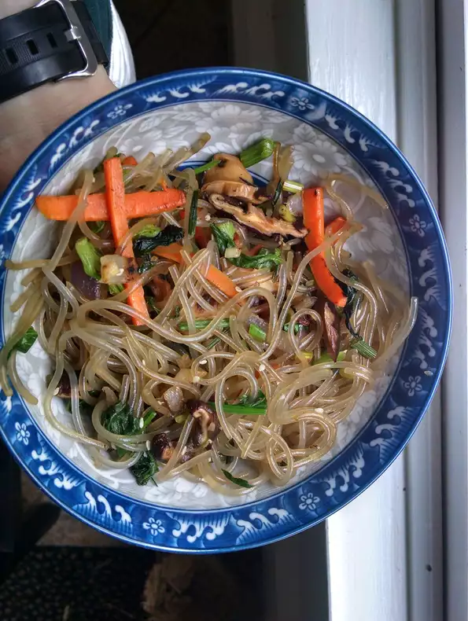

Japchae

Description
This is a delicious vegan Korean noodle dish that is typically served cold, but is also very good hot! Korean meets vegan in this quick and easy japchae recipe: a chewy and crunchy medley of glass noodles, spinach, mushrooms, green onions, and carrots.
Per servings: 455 calories; protein 13g; carbohydrates 73.
Ingredients
- 1 (12 ounce) package Korean sweet potato noodles (dangmyun)
- 5 teaspoons sesame oil, divided
- 1/4 cup soy sauce
- 4 teaspoons white sugar
- 1 tablespoon vegetable oil
- 3 carrots, cut into matchsticks
- 1 onion, thinly sliced
- 1 cup shiitake mushrooms, sliced
- 6 green onions, chopped
- 4 cloves garlic, minced
- 1 (16 ounce) bag fresh spinach
- 1 tablespoon sesame seeds (Optional)
Steps
- Fill a large pot with lightly salted water and bring to a rolling boil; stir in noodles and return to a boil. Cook noodles uncovered, stirring occasionally, until tender yet firm to the bite, about 5 minutes. Drain and rinse with cold water
- Toss noodles with 2 teaspoons sesame oil. Cut into shorter pieces using kitchen shears.
- Combine soy sauce and sugar in a bowl.
- Heat vegetable oil in a skillet over medium-high heat. Saute carrots and onion until soft, about 1 minute. Add mushrooms, green onions, and garlic. Saute until fragrant, about 30 seconds. Add the noodles, soy sauce mixture, and spinach. Cook and stir until noodles are heated through, 2 to 3 minutes more. Remove from heat. Toss in remaining 1 tablespoon sesame oil and sesame seeds.
Web link:
https://www.theodinproject.com/lessons/foundations-recipes